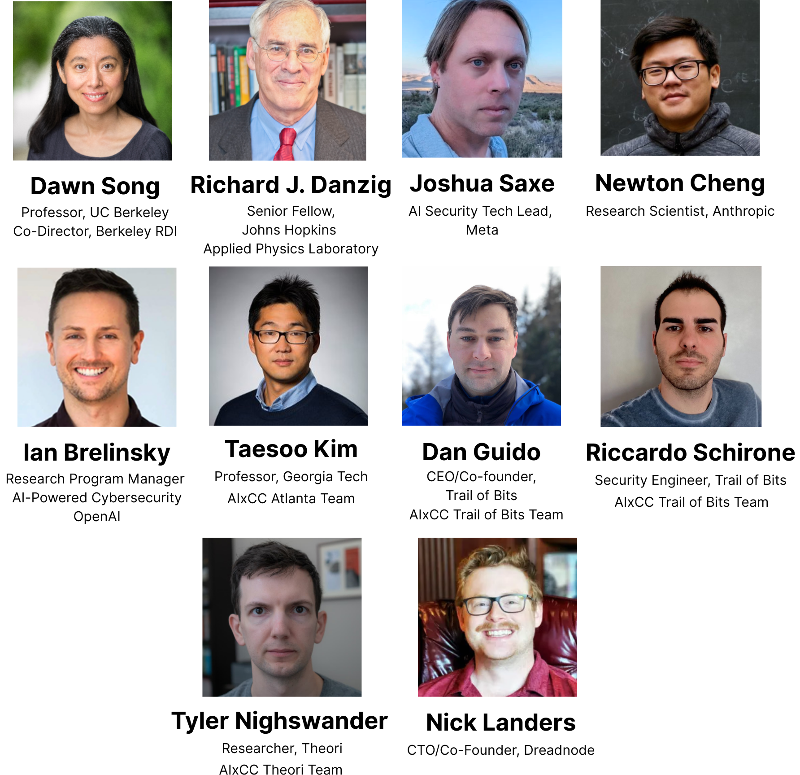

Recent advances in large-scale AI systems are rapidly reshaping both offensive and defensive cybersecurity. Benchmarks such as CyberGym and BountyBench, together with results from AIxCC and Anthropic's recent blog, show that AI can meaningfully support real-world cybersecurity tasks—including zero-day vulnerability discovery. Anthropic’s Claude Sonnet 4.5 system card highlights the model’s advanced cybersecurity capabilities, tested using CyberGym. While these developments highlight AI’s potential to strengthen defenses, they also underscore its growing role in offensive applications, as shown in the recent SoK paper. Understanding and assessing both sides of this landscape has become essential.
This workshop will convene researchers and practitioners across AI and security to examine the state of AI-enabled threats and defenses, forecast emerging risks, and identify opportunities for collaboration. We will address the following key questions during the workshop:
- How is frontier AI being applied across different stages of the cyber landscape, including both attack and defense side?
- What lessons can we draw from real-world benchmarks and deployments?
- What milestones or breakthroughs would signal that AI systems will substantially change the cybersecurity landscape and the balance between cyberoffense and cyberdefense, and how should we prepare for these tipping points?
- What concrete steps should stakeholders take — near-term and long-term — to build resilience, close evaluation gaps, and ensure safe and beneficial uses of frontier AI in cybersecurity?
- How can academia, industry, and government better coordinate to anticipate risks and opportunities?
The program will feature presentations from AIxCC winning teams, as well as leading voices from frontier AI labs, academia, and major technology and security companies. We invite you to join us at this pivotal moment for AI in cybersecurity and contribute your insights to shaping the field.
Additionally, we’re gathering community perspectives on the potential impact of frontier AI on cybersecurity. Please take the following survey. Your insights are very helpful to the community. Thank you!
Date
Part 1: November 6, 2025 — 9:00 AM to 2:10 PM PST
Part 2: TBA (We will send out an announcement when the date is set. Please sign up for Workshop Part 2!)
Speakers

More to be announced soon
Program
Part 1:
| Time | Session | Speakers | Talk Title | ||||||
|---|---|---|---|---|---|---|---|---|---|
| 9:00–9:10 | Opening Remarks | Dawn Song | [Watch the video] | ||||||
| 9:10–10:30 | Session 1: Lessons from AIxCC |
|
|||||||
| 10:30–11:00 | Panel Discussion 1 [Watch the video] | ||||||||
| 11:00–12:00 | Session 2: Insights from Frontier AI Labs |
|
|||||||
| 12:00–12:30 | Panel Discussion 2 [Watch the video] | ||||||||
| 12:30–1:30 | Session 3: Perspectives from Academia, Security Companies, and Government |
|
|||||||
| 1:30–2:00 | Panel Discussion 3 [Watch the video] | ||||||||
| 2:00–2:10 | Closing Remarks | Dawn Song | [Watch the video] | ||||||
Part 2:
To be announced soon
Co-organizers